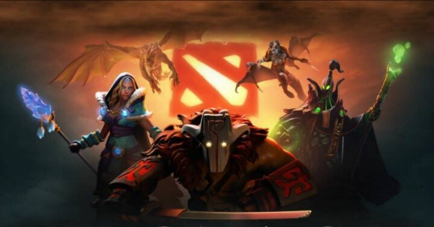
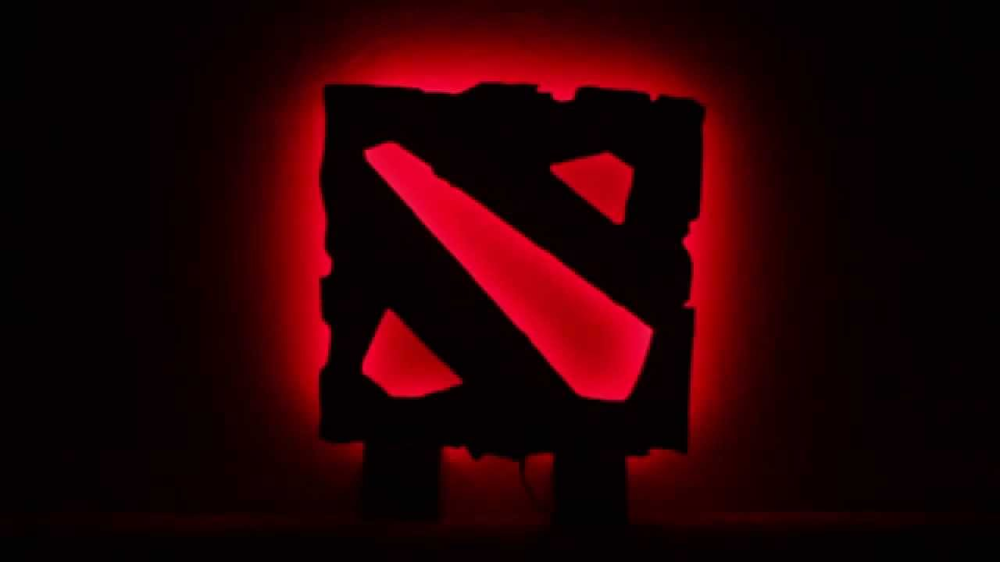
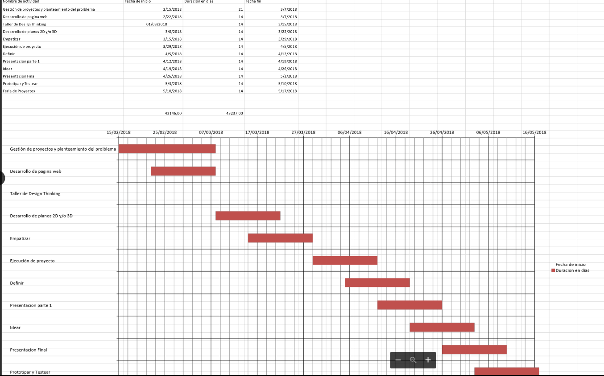

Language: English
El proyecto va dirigido a los gamers del juego de dota 2, a lo largo de la historia de este videojuego en nuestro país se ha demostrado que los gamers invierten mucho de su tiempo y dinero para poder satisfacer sus oportunidades de mejorar y pertenecer a ligas grandes que se juegan por todo el mundo, entre ellas la IT, el internacional donde juegan los mejores equipos de todo el mundo.



IMPACTO SOCIAL
Esta serie de lámparas están inspiradas en las lámparas de escritorio de estilo clásico y con un toque moderno. Sin embargo, hemos optado por realizar más nuevos diseños, ofreciendo lámparas de ilusión óptica más grandes y brillantes que tienen como objetivo alterar la percepción del espacio y la forma mediante el uso de formas 3D como base de sus diseños en 2D.
Nuestro proyecto tiene la oportunidad de abarcar varios tipos de lámparas con diseños de DOTA 2, podemos realizar un producto dedicado a los gustos del cliente. Aprovechamos la importancia que ha tomado la tecnología en el entretenimiento el cual está dedicado más a un público juvenil.
-Actualmente el mercado dedicado al público juvenil ha crecido con forme la moda continua con modificándose; como ejemplo actualmente vivimos en una era donde la tecnología está logrando estar en todas partes, como en el entretenimiento.
-Los videojuegos son una oportunidad que hemos notado para sacar provecho, muchos jóvenes tienen como pasatiempo a los videojuegos (DOTA 2) y la mayoría encuentra algo que capta mucho su atención como un personaje favorito o incluso una marca de consola la cual podría ser de su gusto también.
-Es por ello sienten la necesidad de tener algo que los mantenga conectado con su pasatiempo favorito durante deberes o cuando simplemente está dedicando su tiempo a otra actividad sin necesidad de esta presente o usando su consola, entonces la mejor forma de satisfacer esa necesidad es adquiriendo algún recuerdo u objeto dedicado a los que necesitas; en nuestro caso podremos ofrecer diseños donde el público juvenil pueda elegir acorde a sus gustos.
¿LA PROPUESTA ES DE ALTO IMPACTO ECONOMICO Y SOCIAL?
Pues nuestro proyecto generara ganancias gracias al atractivo de los diseños de DOTA 2 y al uso de medios que difundan nuestro producto, ya sea el uso de páginas web o algún otro tipo de publicidad. Las alianzas también pueden aportar a que la venta de nuestro producto se mayor; también podemos aprovechar la escasez de nuestro producto en la ciudad de Arequipa y su alta demanda.
Los productos están destinados a atraer a consumidores de todas las edades y su objetivo radica en ejercitar el cerebro de manera saludable. Desarrolladores de videojuegos para entrenar el cerebro y la memoria afirman que practicando cada día durante unos minutos es posible elevar el nivel intelectual, mejorar la memoria y reducir el estrés. En el impacto social podemos ayudar al resolver el problema o la necesitas del público al brindarle un producto tomando muy en cuenta la especificación del comprador.
Diagrama de Gantt
En esta parte daremos a conocer las fechas acordadas en grupo para avanzar con el proyecto en el transcurso del tiempo otorgado, asimismo abarcar estos temas:
-Esta popularidad de este juego y la cantidad de jugadores que hay en todo el mundo ha generado mucho movimiento de dinero tanto dentro del juego así como también externamente he independiente por cada persona que crea sus propios bienes para venderlos. En nuestro caso se realizó encuestas acerca de que productos compran los gamers de este juego.
-Lo que se quiere lograr con el Arduino y el NRF24L01 es que 2 amigos gamers tenga sus escritorios o lamparas en sus hogares, y cuando uno de los dos empieza a jugar dota 2 encenderá sus lamparas o su escritorio, el cual mandara una señal y automáticamente enviara señal a la lampara o escritorio de su amigo indicándole que esta en partida y que desea jugar junto con el.
-Crear artefactos que los jugadores con tematica del juego DOTA2 y que estos puedan adiquirirlo, y que a sus vez sean de gran ultidad para ellos.